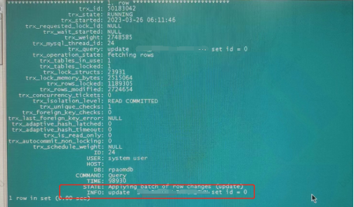
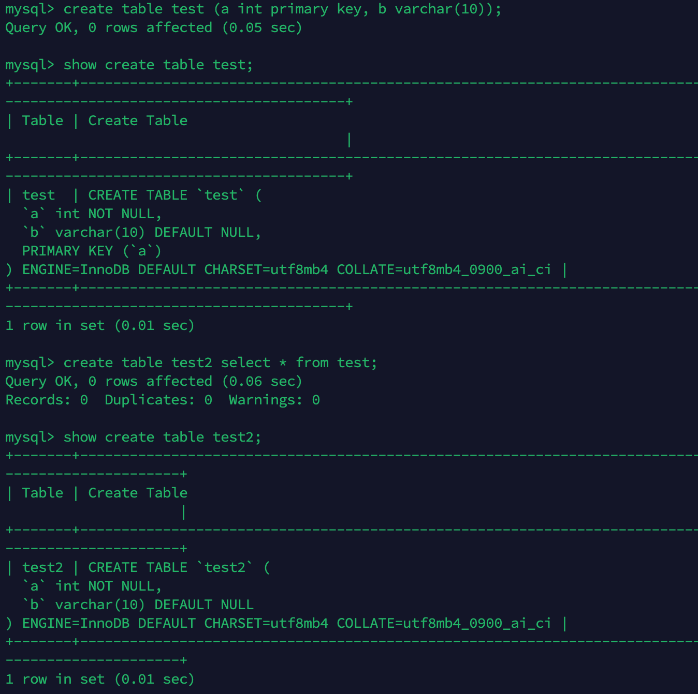
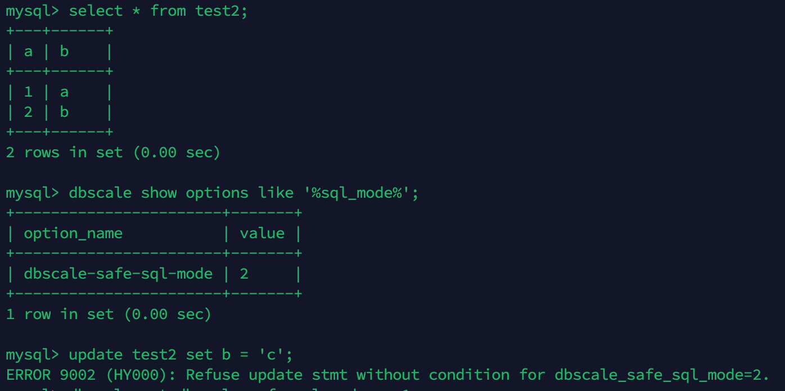
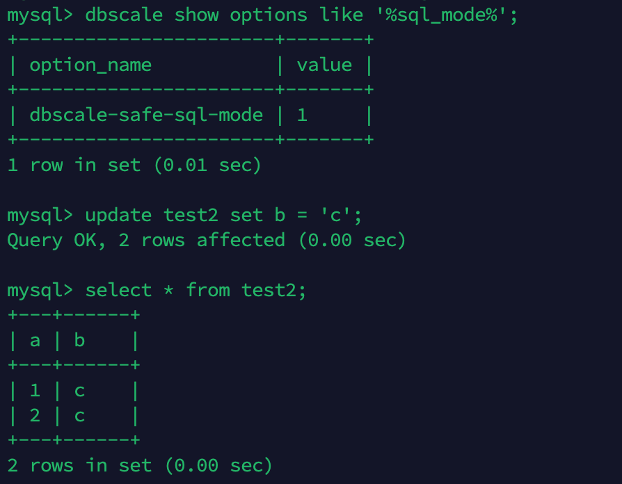
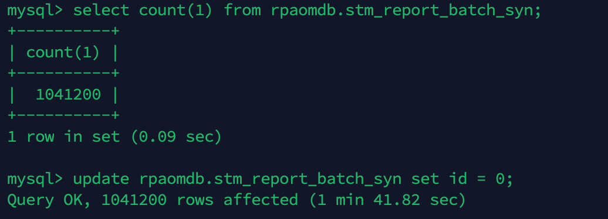
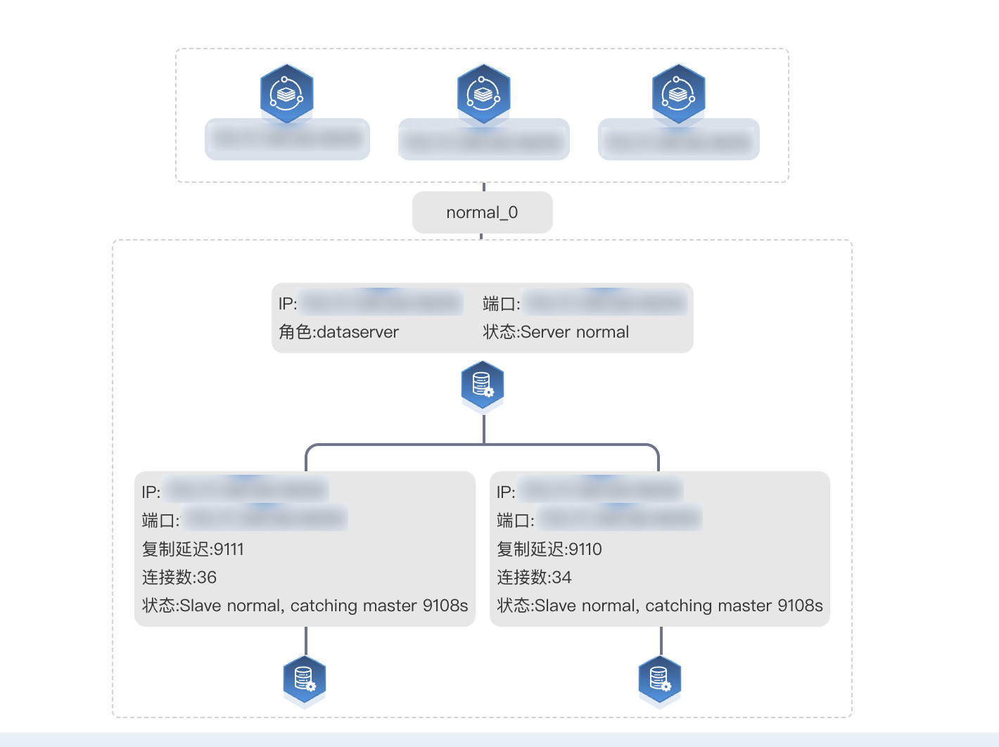

包拯断案 | 数据库从库复制延迟引发高可用风险 怎么破@还故障一个真相
提问：作为DBA运维的你是否遇到过这些烦恼
1、数据库从库复制出现了延迟，是什么原因导致的？
2、延迟引发了高可用风险，应该如何处理？
心中有章，遇事不慌
作为DBA的你，遇到问题无从下手，除了在问题面前徘徊，还能如何选择？如果你一次或多次遇到该问题还是无法解决，又很懊恼，该如何排忧呢？关注公众号，关注《包拯断案》专栏，让小编为你排忧解难~
#包拯秘籍#
一整套故障排错及应对策略送给你，让你像包拯一样断案如神：
#首先
遇到此类问题后，我们要做到心中有章（章程），遇事不慌。一定要冷静，仔细了解故障现象（与研发/用户仔细沟通其反馈的问题，了解故障现象、操作流程、数据库架构等信息）
#其次
我们要根据故障现象进行初步分析。心中要想：是什么原因导致数据库从库复制出现延迟？例如：是大事务导致了从库延迟，还是参数设置不当原因导致的？
#然后
针对上述思考，我们需要逐步验证并排除，确定问题排查方向。
#接着
确定了问题方向，进行具体分析。通过现象得出部分结论，通过部分结论继续排查并论证。
#最后
针对问题有了具体分析后，再进行线下复现，最终梳理故障报告。
真刀实战，我们能赢
说了这么多理论，想必实战更让你心动。那我们就拿一个真实案例进行分析——某国有大型商业银行业务系统发生主从延迟告警，这种问题该如何快速分析处理：
1、故障发生场景
在项目现场兢兢业业进行数据库环境部署的你，突然发现某个系统出现了主从延迟告警。虽然不影响生产主库使用，但导致从库复制延迟，存在数据库集群的高可用风险，DBA心中警铃大作，立马着手排查。
2、故障排查分析
1）根据告警短信查询主从同步状态，发现从库接收到的gtid为1-12481714，从库应用的gtid为1-12396346，主从延迟大概85w个事务。经过分析发现，生产主库正常运行，从库同步任务SQL线程与IO线程无报错，初步怀疑为大事务导致的从库延迟。
经过仔细排查分析，发现该故障是由于生产库中创建了一张无主键、无索引的“测试表”，同时该表存在较多text类型的大字段。然后在生产库执行了一条没有过滤条件的update语句，导致整个语句走了全表扫描，该“测试表”共计924384条数据，属于大事务。
事务语句如下图：

由于该update语句没有引用任何过滤条件，且表无主键、无索引，导致该语句走了全表扫码，更新92w行，通过binlog行模式将日志发送到备库后需要回放92w次。每次都需要进行一次全表扫描，备集群回放慢主备。
2）继续观察主从同步延迟情况，发现主从延迟并无缩小，判断备库日志回放夯住。由于主从库事务量相差较多，建议重做备库，该方案操作风险最低，且能完全保证主从库间的数据一致性。
3、问题复现
1）测试创建无主键表
直接创建无主键表，显示失败，报错不支持创建无主键表。
2）创建测试表

通过create table xx select * from xxx方式将表进行复制，此时复制后的表是无主键表。
3）测试更新语句


当dbscale-safe-sql-mode参数为2时，无法执行无条件更新语句；当该参数为1时，可以执行无条件更新语句。
4）按照生产环境规模，构建更新后同步异常情况复现场景——


通过第4步复现出无主键大表，进行全表更新，出现主从卡住的现象。
5）通过以上测试步骤说明：
采用create table xxx as select * from xxx方式直接复制表，会丢掉原表一些信息，例如主键、索引等。
复盘总结
1. 研发人员要严格按照参数开发规范中的描述进行开发，禁止使用create table xxx as select * from xxx语句进行表复制。并将表复制操作修改为2步：第一步复制元数据，create table xxx like xxxx；第二步复制数据，insert into xxx select * from xxxx。
2.避免在生产环境中进行测试。
3.大事务要进行拆分，避免出现全表更新或删除等操作。
4.通过参数sql_require_primary_key（创建新表或更改现有表结构的语句是否强制要求表具有主键），规避create table as select 行为。
5.建议将dbscale-safe-sql-mode参数设置为2，禁止进行无条件更新语句执行。